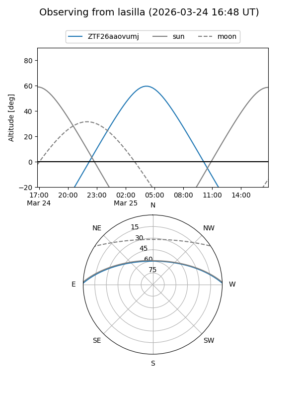
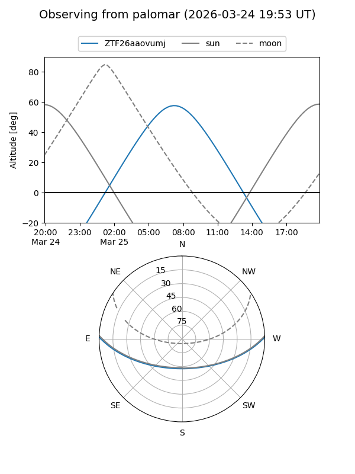

ZTF26aaovumj
Target ZTF26aaovumj at 2026-03-25 09:48
Aliases and brokers:
FINK: link
Lasair: link
ALeRCE: link
alt names
ZTF26aaovumj (ztf,fink_ztf)
Coordinates:
equatorial (ra, dec) = 174.0073,+1.20178
equatorial (HMS+DMS) = 11:36:01.75,+01:12:06.41
galactic (l, b) = (264.8826,+58.38866)
Flags:
Photometry:
last ztfg=18.57
1 ztfg detections
Lightcurve
Visibility


Additional plots